🌿Daily Journal
Date: Monday, November 11, 2025 • Panels 1–18 (left → right); Stakes 1–4 within raised bed
📝Summary of Activities
- Brought basil and strawberry plants back outside after cold night indoors
- Watered multiple plants that were dry from overnight
- Pruned tomato plant - removed all diseased lower branches
- Added 1-1.5" layer of Miracle-Gro Organic Choice mulch to tomato
- Applied Captain Jack's Neem Oil to zucchini Stake 3 and 4
- Removed spotted leaves from Strawberry - Right and added fresh topsoil
- First watering for both lavender seed pots (Day 2 since planting)
- Deep watered garlic planter with hose (16 oz)
☀️Weather / Sun Conditions
- Temperature: 40°F – 68°F
- Conditions: Sunny and clear
- Sun: Sunrise 0653, Sunset 1745
- Wind: Light breeze
- Notes: Cold night (below 40°F), brought several plants indoors for protection
📝General Observations
- All plants survived the cold night well with no visible damage
- Tomato plant has first fruits forming - major milestone!
- Lavender seeds still not germinated (expected, day 2 of 14-21 days)
- Arugula showing excellent recovery after November 5th reseeding
- Some fungal leaf spot issues on Strawberry - Right and tomato lower leaves
- Many plants needed watering after dry overnight period
❓Questions & Answers
Q: Should I clean leaves with alcohol or water before applying neem oil?
A: Use water, not alcohol. Zucchini leaves are tender and alcohol can damage their protective coating and cause burn spots in sunlight. Use room-temperature water, let dry completely, then apply neem oil.
📋Upcoming Actions
- Apply Captain Jack's neem oil to Strawberry - Right (tomorrow morning) — Affects: strawberry_002
- Add potting mix layer to broccoli/chives and reseed chives (in a few days) — Affects: broccoli_001, chives_001
- Add mulch to Zucchini Stake 3 (in about a week) — Affects: zucchini_003
🪴Plant by Plant
Each entry lists container, care notes, and photos with observations made throughout the day
Panel 1 — Basil - Left 2:00 PM
- Container: 8" white round pot, 0.94 gal
- Soil Mix: Original nursery potting mix
- Soil Moisture: very dry
- Current Stage: Vegetative
- Next Stage: Ready for harvest
- Observations: Plant vibrant and upright. Was brought indoors last night due to temps below 40°F. Soil very dry.
- Actions Taken:
- Watered 1½ cups slowly and evenly over soil surface
- Checked after 10 minutes, added ½ cup more as top 2" still felt dry
- Ensured proper drainage
- Notes: Plant expected to perk up within an hour. Avoiding fertilizer today to let it stabilize after cold night.
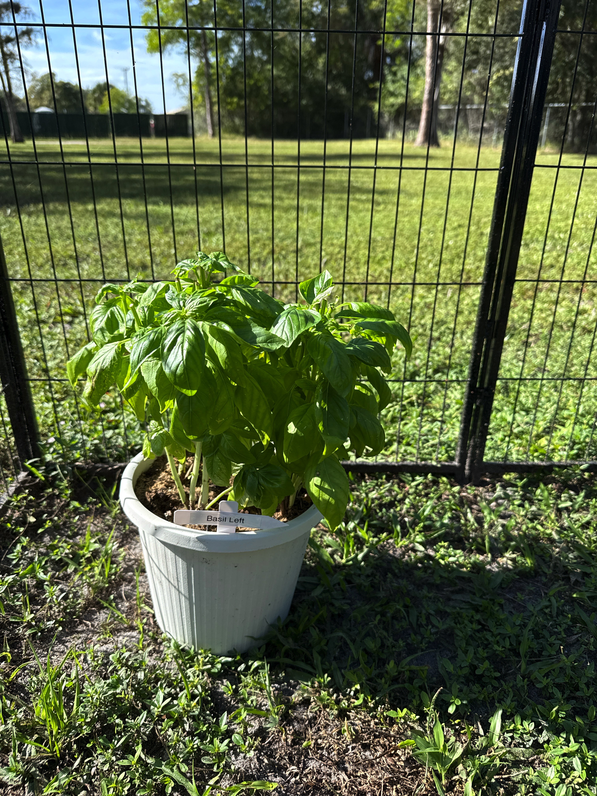
After being brought back outside
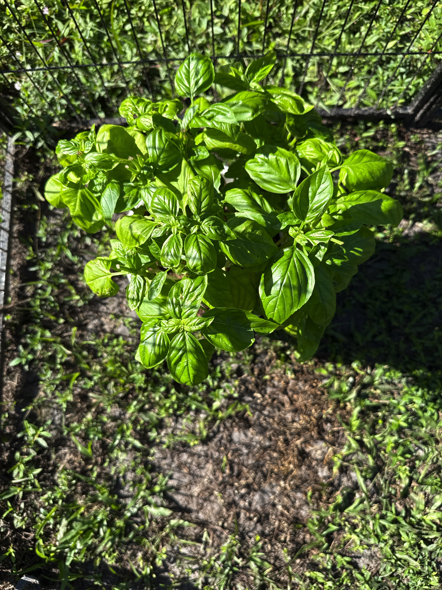
Close-up showing dry soil
Panel 2 — Basil - Right 2:00 PM
- Container: 8" white round pot, 0.94 gal
- Soil Mix: Original nursery potting mix
- Soil Moisture: Top 1 inch dry, moist below
- Current Stage: Vegetative
- Next Stage: Ready for harvest
- Observations: Plant healthy and full with excellent color and strong leaf growth. Top soil dry but moist about 1 inch down.
- Actions Taken:
- Watered ½ to ¾ cup (120-180 mL) evenly across soil
- Ensured no pooling
- Notes: Light watering to re-moisten upper layer only since lower soil still moist.
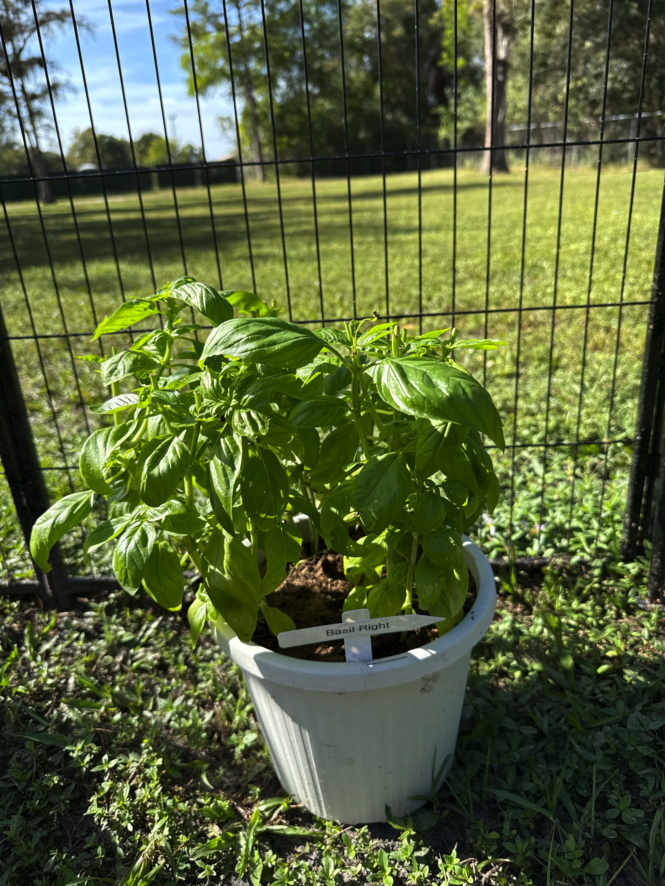
Healthy full growth
Panel 3 — Strawberry - Left 2:00 PM
- Container: 6" round black planter
- Soil Mix: Nursery potting mix from transplant
- Soil Moisture: nice and moist
- Current Stage: Flowering
- Next Stage: Fruit development
- Observations: Healthy and well-established after recent transplant. Leaves upright, flower color vibrant. Small brownish spots on lower leaf - likely transplant stress or early sun exposure.
- Actions Taken:
- No watering - soil already moist from being indoors
- Will check at sunset, water ½ cup only if top inch dry
- Notes: Spots appear minor and not spreading - monitoring for changes.
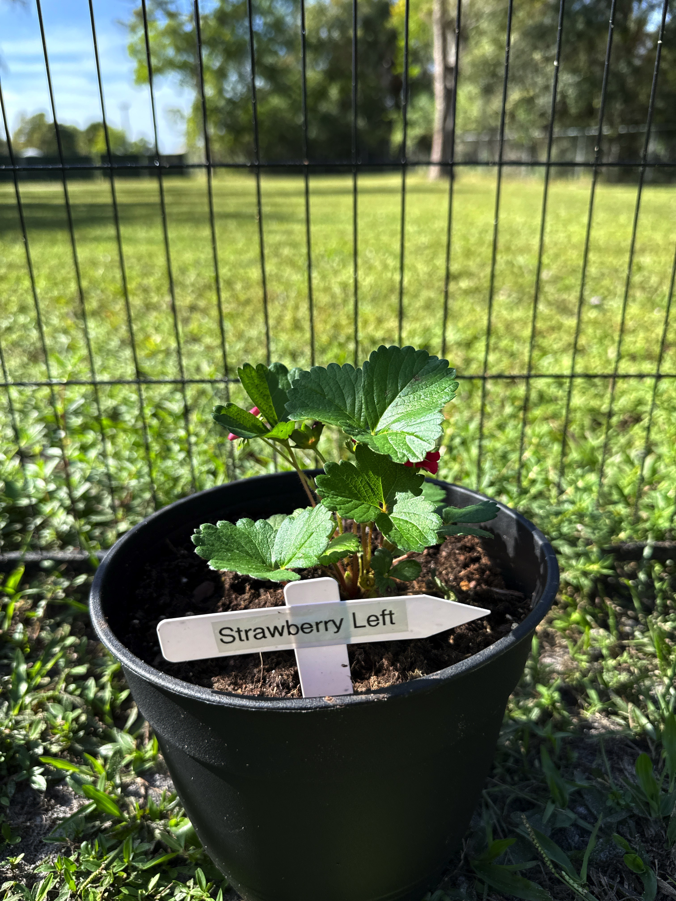
Full plant view
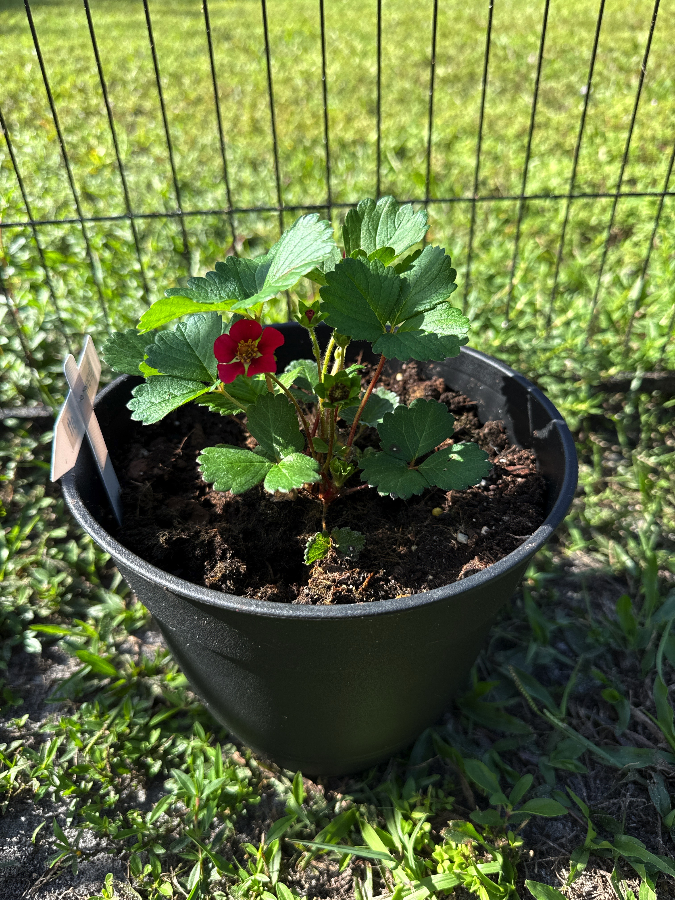
Flower close-up
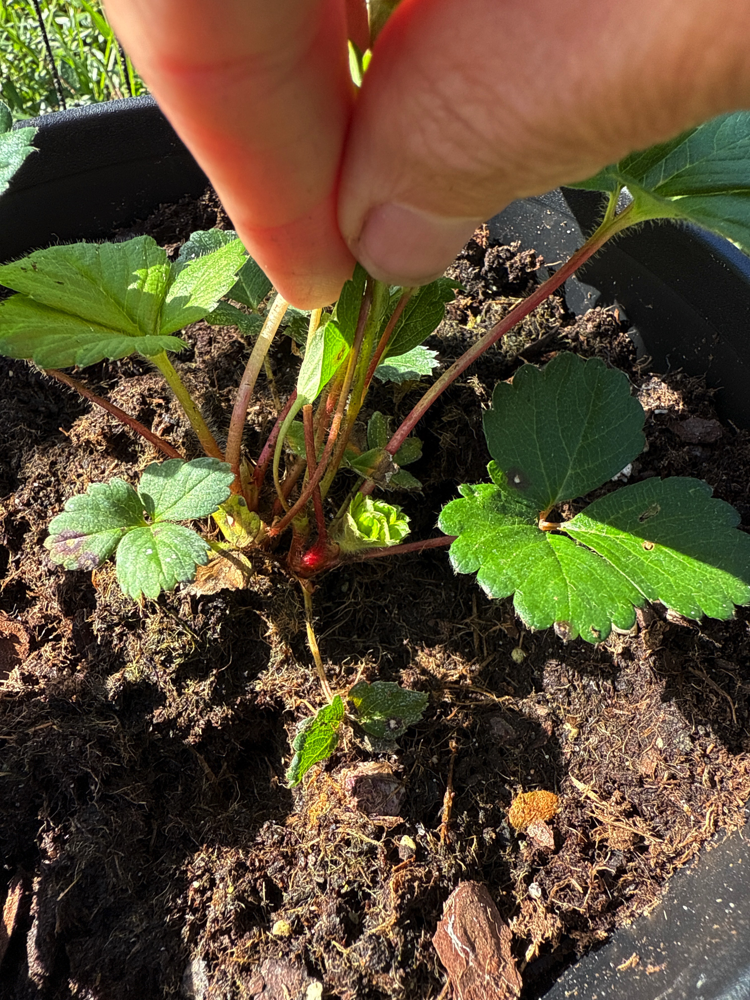
Spots on lower leaf
Panel 4 — Strawberry - Right 2:00 PM
- Container: 2.32 qt black pot
- Soil Mix: Original potting soil + topsoil/sand fill
- Soil Moisture: still moist
- Current Stage: Flowering with leaf spot issues
- Next Stage: Recovery and fruit development
- Observations: Plant upright with healthy inner growth. Several outer leaves show brown-purple spots consistent with fungal leaf spot (Mycosphaerella). New leaves and crown appear strong.
- Actions Taken:
- Removed affected leaves with clean scissors
- Lightly loosened topsoil surface for airflow
- Added thin layer of fresh topsoil
- Retained large upper leaf (few edge spots but still photosynthesizing)
- Notes: Captain Jack's neem oil planned for tomorrow morning (11/12) after 24-48 hour healing period.
❓Questions & Answers
Q: Should I also get rid of this big leaf with a few spots?
A: Keep it for now. The veins are strong and green, the leaf surface is firm, and spots aren't spreading inward. It's still actively photosynthesizing. Monitor daily and remove only if spots enlarge or new ones appear near center veins.

Before removing diseased leaves

Close-up of leaf spot damage
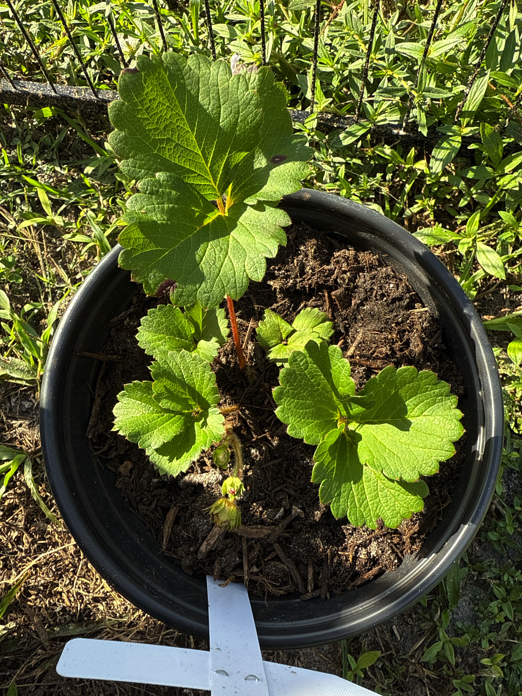
After cleanup - large leaf retained
Panel 11 — Arugula & Cilantro Box
Arugula 2:35 PM
- Container: Window planter 23.5" × 6" (shared)
- Position: Left side
- Soil Mix: Sand/soil base + potting mix top layer (added 11/05)
- Soil Moisture: Top 1 inch bone dry, slight moisture below
- Current Stage: Recovery and new growth
- Next Stage: Continued vegetative growth
- Observations: Significant new growth since Nov 5 reseeding! Dense patch of healthy seedlings. Some lighter green leaves near center where thinning damage occurred. Overall excellent recovery.
- Actions Taken:
- Watered ½ cup evenly across to re-moisten top layer

New growth recovering well
Cilantro 2:00 PM
- Container: Window planter 23.5" × 6" (shared)
- Position: Right side
- Soil Mix: Sand/soil only (no potting mix)
- Soil Moisture: evenly moist from morning watering
- Current Stage: Early vegetative
- Next Stage: Continued growth
- Observations: Seedlings showing good density and upright growth. Leaves bright green though a few appear slightly pale (typical for leaner soil). No damping-off or stress.
- Actions Taken:
- Watered this morning with arugula
- Brought indoors last night for cold protection

Dense healthy seedlings
Raised Bed — Panels 16–18
Stake 1 — Cherry Tomato 3:00 PM
- Soil Mix: Topsoil + sand
- Soil Moisture: dry 1 inch down before watering
- Current Stage: Fruiting
- Next Stage: Fruit development
- Observations: Plant vigorous with FIRST FRUITS FORMING! Speckled and browning lower leaves show early blight or bacterial leaf spot. Upper foliage healthy and strong.
- Actions Taken:
- Pruned all lower speckled branches (no fruit on removed branches)
- Deep watered soil/sand mix at base, avoiding leaves
- Added 1-1.5" layer of Miracle-Gro Organic Choice mulch around base
- Watered mulch to settle it in and hydrate root zone
- Notes: Plant appears leaner after pruning but structurally healthy. New side shoots will emerge in 5-7 days. Covered with plastic tablecloth last night.
❓Questions & Answers
Q: Will it fill out again? I chopped a lot off.
A: Yes absolutely! New side shoots (suckers) will emerge in upper leaf joints within 5-7 days. Because you removed lower branches, the plant redirects energy toward top growth and fruit production. Within 2-3 weeks you'll see thicker midsection with more flower clusters.

Before pruning - speckled leaves
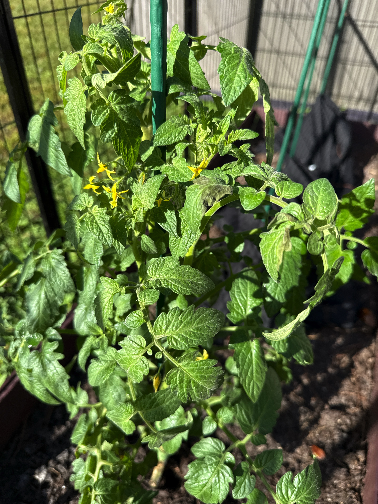
Full plant before work
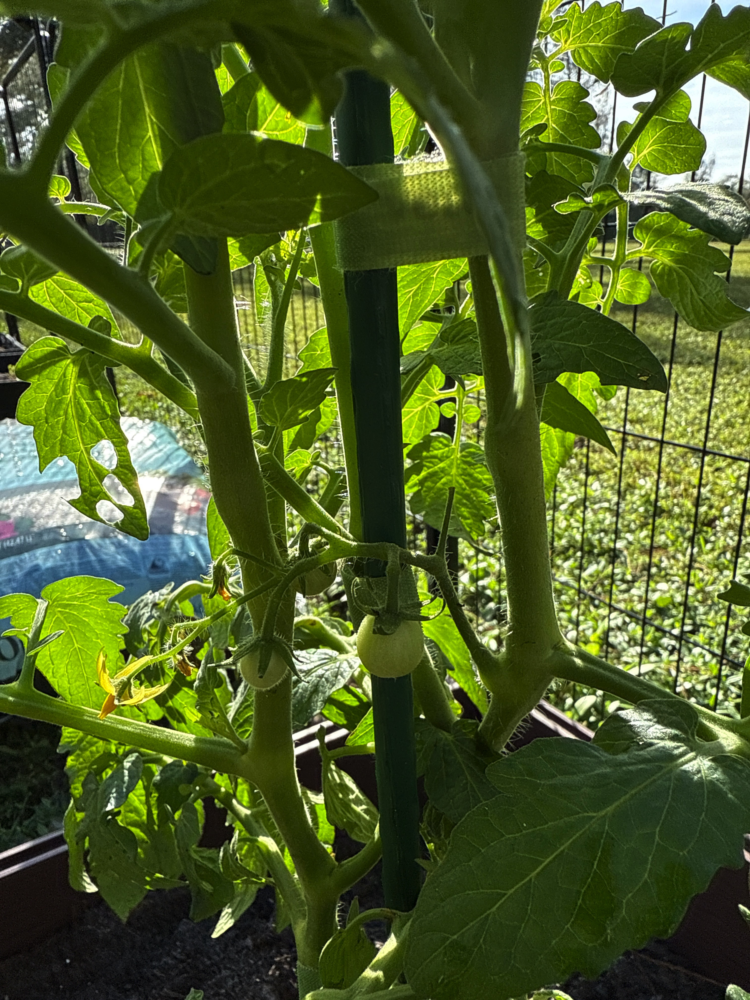
First fruits visible!
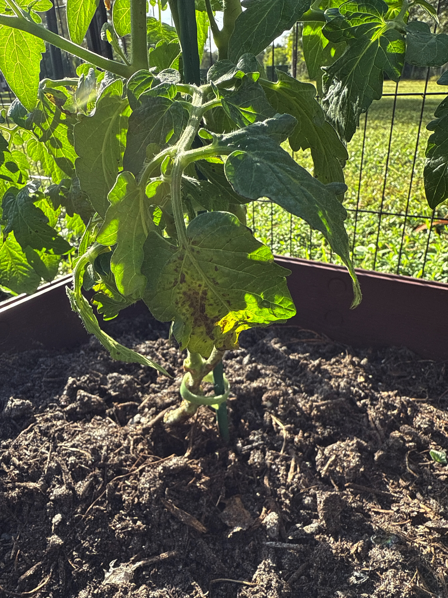
Diseased leaves close-up
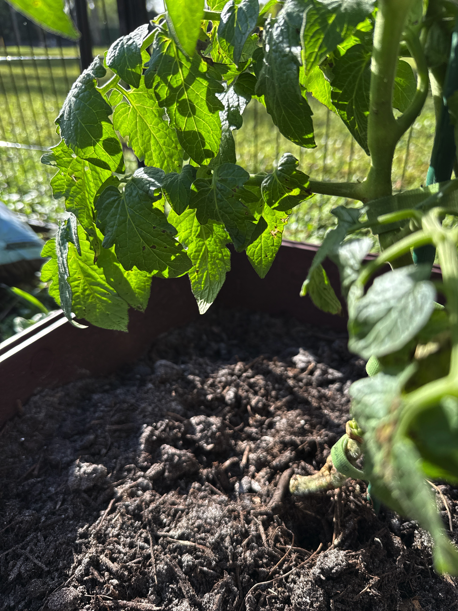
After pruning - clean lower stem

Full plant after all work

Mulch layer settled
Stake 2 — Zucchini (direct-sown) + Green Beans 3:35 PM
- Soil Mix: Topsoil + sand
- Soil Moisture: Top slightly dry, moist 1 inch down
- Current Stage: Early seedling
- Next Stage: Vegetative growth
- Observations: Zucchini seedling upright with firm cotyledons, first true leaf expanding. Color brightening since morning. Green bean seed still below surface.
- Actions Taken:
- Watered ½-¾ cup in morning
- Wrapped in blanket overnight
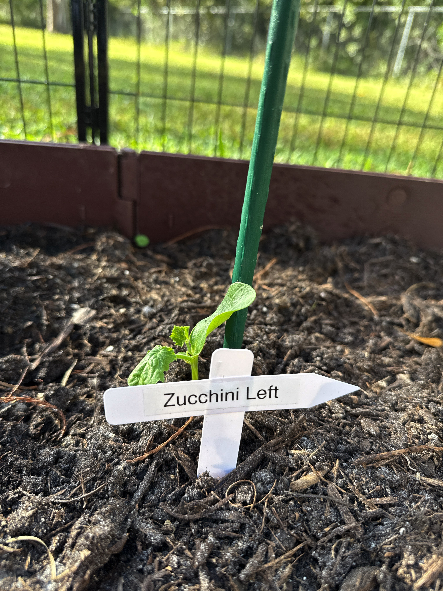
Young seedling recovering
Stake 3 — Zucchini (direct-sown) 2:45 PM
- Soil Mix: Topsoil + sand
- Soil Moisture: moist after ½ cup watering
- Current Stage: Vegetative growth
- Next Stage: Continued growth
- Observations: Plant healthy and upright with new inner growth. Lower leaves show small chew marks (likely beetles or caterpillars). Stem sturdy and green.
- Actions Taken:
- Watered ½ cup at base
- Cleaned leaves with room-temperature water
- Applied Captain Jack's Neem Oil spray (first treatment)
- Wrapped in blanket overnight
- Notes: Wait 1 week before mulching. First neem treatment for this plant.
❓Questions & Answers
Q: Should I clean the leaves with alcohol or water before neem oil?
A: Use water, not alcohol. Zucchini leaves are tender and alcohol can damage their protective coating. Use room-temp water, let dry 30min-1hr, then apply neem.
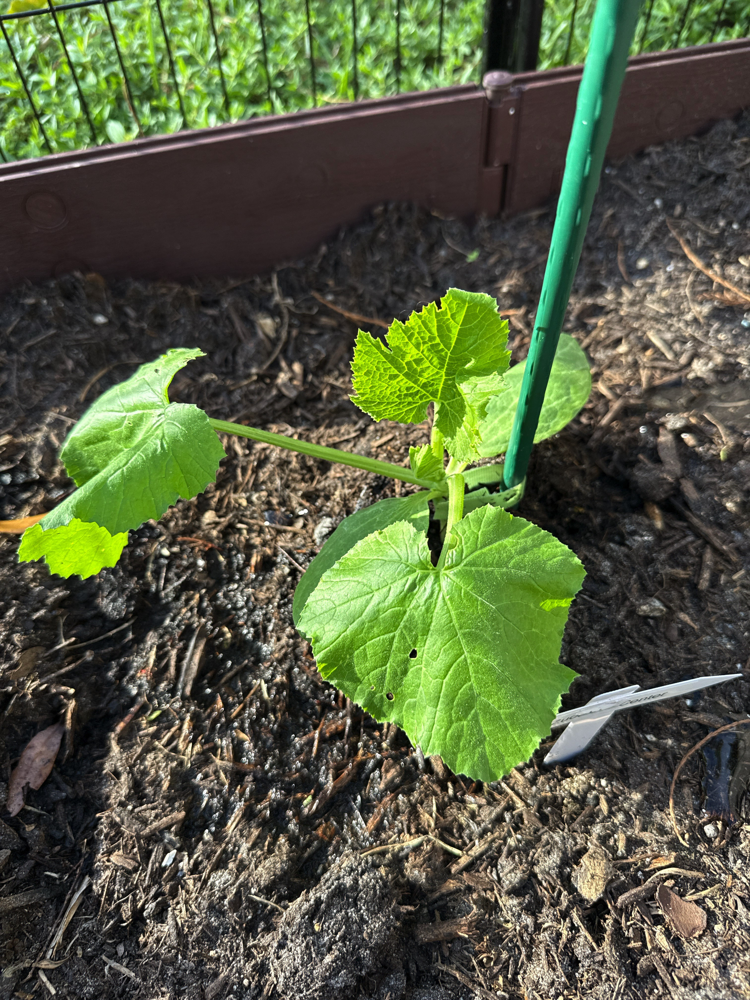
Chew marks on lower leaves

Full plant before neem treatment
Stake 4 — Zucchini (transplanted) 2:45 PM
- Soil Mix: Topsoil + sand
- Soil Moisture: barely moist
- Current Stage: Post-transplant recovery
- Next Stage: Vegetative growth
- Observations: Recovering steadily. Healthy central growth and firm stems. Pale leaf color shows still re-establishing roots.
- Actions Taken:
- Watered ½-¾ cup to moisten top 2 inches
- Applied Captain Jack's Neem Oil spray as preventive
- Wrapped in blanket overnight
- Notes: Watch for darker leaves in 3-4 days (sign of re-anchored roots).

Pale growth recovering
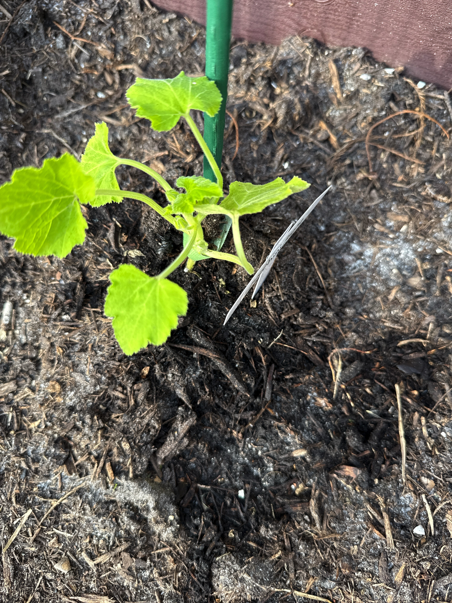
New central growth